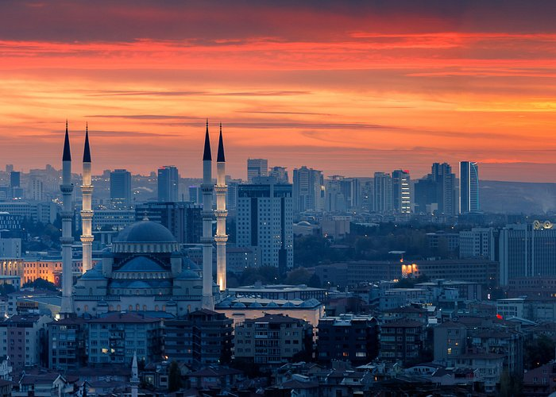

Ankara'nın 13 Ekim 1923'te başkent ilan edilmesinin ardından şehir hızla gelişmiş ve Türkiye'nin ikinci en kalabalık ili olmuştur. Türkiye Cumhuriyeti'nin ilk yıllarında ekonomisi tarım ve hayvancılığa dayanan ilin topraklarının yarısı hâlâ tarım amaçlı kullanılmaktadır. Ekonomik etkinlik büyük oranda ticaret ve sanayiye dayalıdır. Tarım ve hayvancılığın ağırlığı ise giderek azalmaktadır. Ankara ve civarındaki gerek kamu sektörü gerek özel sektör yatırımları, başka illerden büyük bir nüfus göçünü teşvik etmiştir. Cumhuriyetin kuruluşundan günümüze, nüfusu ülke nüfusunun iki katı hızda artmıştır. Nüfusun yaklaşık dörtte üçü hizmet sektörü olarak tanımlanabilecek memuriyet, ulaşım, haberleşme ve ticaret benzeri işlerde, dörtte biri sanayide, %2'si ise tarım alanında çalışır. Sanayi, özellikle tekstil, gıda ve inşaat sektörlerinde yoğunlaşmıştır. Günümüzde ise en çok savunma, metal ve motor sektörlerinde yatırım yapılmaktadır. Türkiye'nin en çok sayıda üniversiteye sahip ili olan Ankara'da ayrıca, üniversite diplomalı kişi oranı ülke ortalamasının iki katıdır. Bu eğitimli nüfus, teknoloji ağırlıklı yatırımların gereksinim duyduğu iş gücünü oluşturur. Ankara'dan otoyollar, demir yolu ve hava yoluyla Türkiye'nin diğer şehirlerine ulaşılır.
Ankara ili, doğuda Kırıkkale, kuzeydoğuda Çankırı, kuzeybatıda Bolu, batıda Eskişehir, güneyde Konya, güneydoğuda Kırşehir ve Aksaray ile komşudur. Coğrafi olarak Ankara, Sakarya ve Kızılırmak nehirlerinin tam ortasına kurulmuştur. Ankara ilinin yüzölçümü 25.632 km2'dir. 1.355 kilometre uzunluğu ile, tamamı Türkiye toprakları üzerinde yer alan en büyük nehir olan Kızılırmak ilin doğusunu, 824 kilometre ile Türkiye'deki en büyük nehirlerden olan Sakarya Nehri ise, ilin batısını sulamaktadır. Sakarya Nehri'nin kollarından Ankara Çayı, il merkezinden geçer. İlin güneyinde ise 1300 km² ile ülkenin en büyük ikinci gölü, %32,4 tuz oranıyla da dünyanın en tuzlu ikinci gölü olan Tuz Gölü vardır. Ayrıca Tuz Gölü'nün de içinde bulunduğu havza, Türkiye'nin en büyük kapalı havzasıdır.
Ankara nüfusunun dörtte üçü hizmet sektöründe çalışır ve bu sektör ilin gayrisafi hasılasında en büyük paya sahiptir. Sektörün bu kadar gelişmesinin nedeni, göçle gelen nüfusa istihdam sağlayacak kadar büyük sanayinin bulunmamasıdır. İl, Türkiye gayrisafi millî hasılasının %9'una sahiptir. Ülkenin toplam vergi gelirlerinin %12'si, bütçe gelirlerinin %12,3'ü buradan toplanır; buna karşılık ilin ülke bütçesinden aldığı pay %6,4'tür. 2006 yılında Ankara bütçe vergi gelirlerine 16,5 milyar TL, toplam bütçe gelirlerine de 21,1 milyar TL katkıda bulunmuş, bütçeden ise 11,3 milyar TL pay almıştır. 2001 yılı itibarıyla gayrisafi yurt içi hasılasının Ankara'ya düşen kısmının %45'i ticaretten, %23'ü ulaştırma ve haberleşmeden, %14'ü devlet hizmetinden kaynaklanmaktaydı.
Ankara ilindeki müzelerin büyük çoğunluğu Ankara şehir merkezi sınırları içerisinde kalır. İlde çeşitli kurumlarca işletilen 53 müze bulunmaktadır. Kurtuluş Savaşı ve Cumhuriyet'in kuruluş yıllarına ait önemli eşyaları Ankara'daki müzelerde bulmak mümkündür. I. Türkiye Büyük Millet Meclisi Binası'nda bulunan Kurtuluş Savaşı Müzesi, Anıtkabir'deki Atatürk ve Kurtuluş Savaşı Müzesi, II. TBMM Binası'ndaki Cumhuriyet Müzesi, Devlet Mezarlığı Müzesi bu tarihî müzelerin başlıcalarıdır. Bunların yanı sıra İsmet İnönü ve Mehmet Akif Ersoy'un evleri de birer müze olmuştur. Ankara'nın başkent olmasından dolayı doğal olarak Türkiye'nin ilk belli başlı müzeleri (Etnografya Müzesi, Devlet Resim ve Heykel Müzesi gibi) Ankara'da oluşturulmuştur. Çeşitli devlet kuruluşları da başkentte bulunmaları nedeniyle müzelerini burada kurmuşlardır, Ziraat Bankası Müzesi, Türk Hava Kurumu Müzesi, Maden Tetkik ve Arama Genel Müdürlüğü'nün Tabiat Tarihi Müzesi gibi. Yakın yıllarda kurulan ODTÜ Bilim ve Teknoloji Müzesi, Feza Gürsey Bilim Merkezi, Çengelhan Rahmi Koç Müzesi, Ulucanlar Cezaevi Müzesi, Altınköy Açık Hava Müzesi, Erimtan Arkeoloji ve Sanat Müzesi gibi yeni müzelerle Ankara'nın müze seçenekleri zenginleşmektedir.
Ankara, Türkiye dışından gelen turistlerin çok tercih ettiği bir il değildir. Türkiye'ye gelen yabancıların sadece %1,5'i (2007'de 383 bin kişi) Ankara Esenboğa Havaalanı'ndan giriş yapar. Bunların çoğu mayıs-eylül döneminde gelir ve %38'i Alman vatandaşıdır. Ankara ilinde arkeolojik sitlere ilgi duyanlar için yabancı gezi rehberlerinde öncelikle görülmesi önerilen yer Anadolu Medeniyetleri Müzesi'dir. Başkent'in Ulus semtinde Ankara Kalesi, Anadolu Medeniyetleri Müzesi, Ankara Etnografya Müzesi, Roma harabeleri (Augustus Tapınağı ve Julian Sütunu) gibi pek çok turistik yer bulunur. Modern Türkiye'nin tarihi ile ilgilenenler için Anıtkabir ve eski TBMM binası turist kitaplarında sık önerilen yerlerdir. Başkent dışındaki başlıca turistik yerler Beypazarı'nın geleneksel evleri ve Gordion'dur.